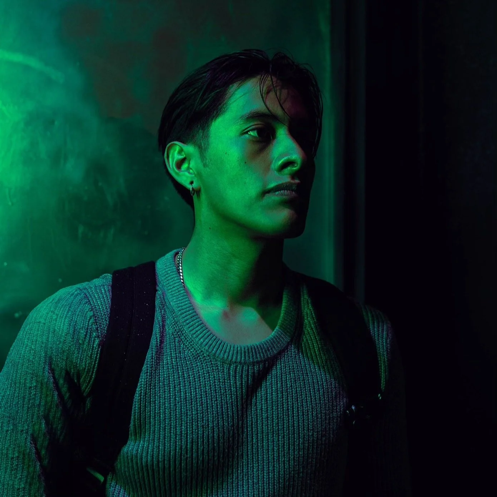

Hi! I’m Johanan, also known as Jo Do. I’m a Brooklyn based photographer and videographer. I began my journey in photography, and more recently videography, in 2020. At a time where fear and uncertainty loomed over us all, I took it upon myself to grab my camera and still find the beauty in such a difficult time.
Since then I have worked on various projects, music events and collaborated with other content creators and artists. It is my belief that art allows us to access our inner most thoughts, passions, fears and aspirations that other mediums simply cannot. That said, it is my passion and calling to bring your vision to life. Let’s create!